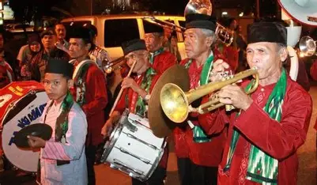
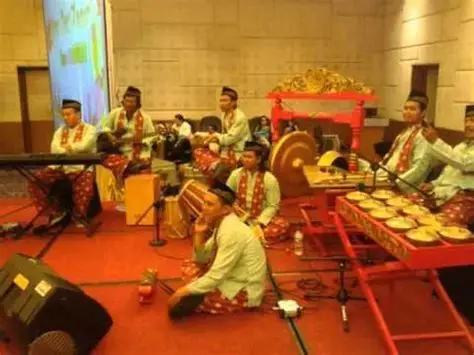
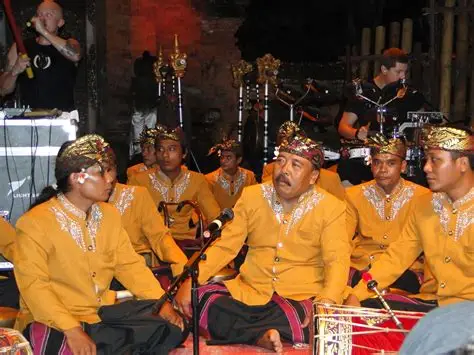

🖼️ Galeri Foto & Video
Album Foto Pertunjukan




Video Dokumentasi YouTube
Tonton dokumentasi lengkap pertunjukan terbaik kami.
Warisan Musik Orkes dengan Sentuhan Seni Nusantara dan Eropa.
Jadwalkan Penampilan KamiKesenian Tanjidor adalah salah satu warisan budaya Betawi yang unik, diperkirakan muncul pada abad ke-19. Orkes ini merupakan perpaduan harmonis antara alat musik tiup Eropa (klarinet, trombon, terompet) dengan ritme dan lagu-lagu tradisional Nusantara. Kami berkomitmen melestarikan dan memperkenalkan Tanjidor kepada generasi baru.
Menjadi kelompok Tanjidor terdepan dalam pelestarian dan inovasi musik orkes Betawi di tingkat nasional dan internasional.
20 November 2025
Tanjidor Raih Penghargaan Seniman Terbaik Daerah. Grup kami diakui atas kontribusi berkelanjutan dalam melestarikan musik orkes Betawi di tingkat provinsi. Baca selengkapnya...
Baca Detail →10 Desember 2025 | 19:00 WIB
Konser Malam Tahun Baru Betawi. Saksikan penampilan kolaborasi unik Tanjidor dengan alat musik modern di Balai Budaya. Tiket terbatas!
Beli Tiket →25 Januari 2026 | 15:00 WIB
Workshop Alat Musik Tradisional. Pelajari cara memainkan terompet dan tambur Tanjidor langsung dari maestro kami. Cocok untuk pemula.
Daftar Sekarang →Tonton dokumentasi lengkap pertunjukan terbaik kami.
Jika tertarik untuk menjadwalkan pertunjukan Tanjidor, ingin berkolaborasi, atau memiliki pertanyaan umum, silakan hubungi kami melalui detail di bawah ini atau kirim pesan cepat melalui WhatsApp.
Alamat Sanggar:
Jl. Kebudayaan No. 45, Jakarta Timur, 13450.
Email: info@tanjidorkami.org
Telepon: 0812 6703 5478